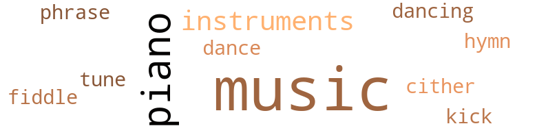
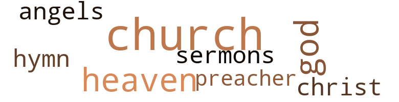

32 music-related terms matched in this text.
Most frequent terms in this topic: music (16); piano (5); instruments (2); fiddle (1); cither (1)

dance.v.02
Definition: move in a pattern; usually to musical accompaniment; do or perform a dance
| word |
sentence |
| dancing |
Several couples were dancing in the still but comfortably cool night air . |
dance.v.03
Definition: skip, leap, or move up and down or sideways
| word |
sentence |
| dance |
They 're playing my favorite piece , and maybe I can induce him to dance . " |
hymn.n.01
Definition: a song of praise (to God or to a saint or to a nation)
| word |
sentence |
| hymn |
Off they went to the kitchen , hand in hand , with Jennie humming her favorite hymn , while Kathy skipped in tune . |
kick.v.04
Definition: kick a leg up
| word |
sentence |
| kick |
Immediately , the fetus began to kick , and she watched pensively as the smock covering her swollen middle bounced up and down . |
music.n.01
Definition: an artistic form of auditory communication incorporating instrumental or vocal tones in a structured and continuous manner
| word |
sentence |
| music |
They talked of many things , including Paula 's amazing progress with her music , their friends , relatives , and plans for the future , and their neighbors , the Armstrongs . |
| music |
" My mommy does n't fuss so much , and she always has the music playing . |
| music |
" Cut off that hellish music ! " |
| music |
After devouring half of the cookies quickly , and giving Rags the other half , she finished her milk , then headed for the living room and her daily music practice . |
| music |
Mix that with drinking and music - whew ! " she exclaimed , blowing her hair . |
| music |
She takes music and ballet . |
| Music |
" You - " " Music and ballet ! " |
| music |
" Tomorrow I plan to make arrangements for a piano , and Kathy to take music and ballet lessons . " |
| music |
The early June evening was enhanced by the faint sounds of sweet music and gay laughter . |
| music |
Inside , friends had divided themselves into small groups , and topics ranged from politics , medicine , civil rights and world affairs to the latest fashions , art and music and to children 's eating habits . |
| music |
You know , he does n't even read music ! " |
| music |
Ca n't you hear all that music ? |
| music |
" Our bedroom is on the opposite end of the house and you wo n't hear the music . " |
| music |
The music stopped as the two young musicians stared in curiosity and surprise . |
| music |
" Want me to turn on some music ? " she said , pausing in front of the large hi-fi . |
| music |
" No , I have n't been in the mood for any music lately . " |
| music |
When Sybil was pleased she always flooded the house with music . |
musical_instrument.n.01
Definition: any of various devices or contrivances that can be used to produce musical tones or sounds
| word |
sentence |
| instruments |
While Rose was busy , Jim began unwrapping sterile instruments . |
| instruments |
Rose handed him the proper instruments , and in seconds he had freed the partially born infant from what appeared certain death . |
phrase.n.02
Definition: a short musical passage
| word |
sentence |
| phrase |
" Yes , darling , " became an almost overused phrase in her vocabulary . |
piano.n.01
Definition: a keyboard instrument that is played by depressing keys that cause hammers to strike tuned strings and produce sounds
| word |
sentence |
| piano |
Paula and Rags raced off to the piano . |
| piano |
She loved the piano and the extra period of expression so much that sometimes she got carried away and forgot to keep an eye on her watch . |
| piano |
" Tomorrow I plan to make arrangements for a piano , and Kathy to take music and ballet lessons . " |
| piano |
Two young men were busy in a far comer of the room , one playing at the white grand piano , the other absorbed in his base fiddle . |
| piano |
Blowing her blond bangs upward , she furiously pulled the piano bench across the room and up to the window . |
tune.n.01
Definition: a succession of notes forming a distinctive sequence
| word |
sentence |
| tune |
Off they went to the kitchen , hand in hand , with Jennie humming her favorite hymn , while Kathy skipped in tune . |
violin.n.01
Definition: bowed stringed instrument that is the highest member of the violin family; this instrument has four strings and a hollow body and an unfretted fingerboard and is played with a bow
| word |
sentence |
| fiddle |
Two young men were busy in a far comer of the room , one playing at the white grand piano , the other absorbed in his base fiddle . |
zither.n.01
Definition: a musical stringed instrument with strings stretched over a flat sounding board; it is laid flat and played with a plectrum and with fingers
| word |
sentence |
| cither |
Well do n't expect me to associate with them - or my child , cither . |
30 violence-related terms matched in this text.
Most frequent terms in this topic: hurt (4); vexation (2); spite (2); fight (2); anger (2)

aggravation.n.01
Definition: an exasperated feeling of annoyance
| word |
sentence |
| exasperation |
She waved her arms in exasperation . |
anger.n.01
Definition: a strong emotion; a feeling that is oriented toward some real or supposed grievance
| word |
sentence |
| anger |
Kathy , " she continued in anger , " after tomorrow you will have a new seat in school ! " |
| anger |
Jim embraced her , his manner calm and sympathetic , but Rose was hot with anger . |
annoyance.n.02
Definition: anger produced by some annoying irritation
| word |
sentence |
| vexation |
Furiously , Sybil pressed the foot pedal , and the resulting hum kept up a lively tempo , matching her mood of vexation . |
| vexation |
A cloud of gloom , sprinkled with alternate concern and vexation , covered her face . |
besiege.v.01
Definition: surround so as to force to give up
| word |
sentence |
| besieged |
But with her body besieged with pain , it seemed her voice was weaker than ever . |
craze.n.02
Definition: state of violent mental agitation
| word |
sentence |
| frenzy |
He jumped and whined in a mad frenzy . |
displeasure.n.01
Definition: the feeling of being displeased or annoyed or dissatisfied with someone or something
| word |
sentence |
| displeasure |
From time to time Sybil would look at him with displeasure . |
fight.n.05
Definition: a boxing or wrestling match
| word |
sentence |
| fight |
Seems he was at a party , there was some drinking , a fight started , and he cut someone with a switch-blade knife , " said Sybil , raising her eyebrows and giving an amused grimace . |
| fight |
" He was out of work six months when he got in this fight . |
fight.v.02
Definition: fight against or resist strongly
| word |
sentence |
| fighting |
Soon they 'll be fighting , and God knows what will happen . |
frustration.n.03
Definition: a feeling of annoyance at being hindered or criticized
| word |
sentence |
| frustration |
You must n't allow someone else 's ignorance and frustration to stain you , flower . " |
fury.n.01
Definition: a feeling of intense anger
| word |
sentence |
| fury |
Rags 's short legs were moving in a fury as he rushed to keep up with her . |
hostility.n.02
Definition: a state of deep-seated ill-will
| word |
sentence |
| enmities |
We knew we were to be the first Negroes in the area , and both of us expected enmities even to the point of cross-burnings on the front lawn . |
injury.n.01
Definition: any physical damage to the body caused by violence or accident or fracture etc.
| word |
sentence |
| hurt |
The hurt in her ankle had almost totally disappeared in the wake of the consuming cramps from her abdomen which were gradually becoming more harrowing , lasting longer , and giving less time for peace between them . |
| hurt |
She 's lying on the floor all hurt . |
| hurt |
Two evenings he came over and expressed his appreciation to both of them and even seemed a little hurt that they would not accept any monetary rewards . |
kick.v.04
Definition: kick a leg up
| word |
sentence |
| kick |
Immediately , the fetus began to kick , and she watched pensively as the smock covering her swollen middle bounced up and down . |
kill.v.10
Definition: cause the death of, without intention
| word |
sentence |
| killed |
I nearly killed myself getting here . |
| killed |
When he was two years old , the daughter was killed in an auto accident . |
| kill |
We 's so glad he did n't kill him , though . |
knife.n.02
Definition: a weapon with a handle and blade with a sharp point
| word |
sentence |
| knife |
Seems he was at a party , there was some drinking , a fight started , and he cut someone with a switch-blade knife , " said Sybil , raising her eyebrows and giving an amused grimace . |
malice.n.01
Definition: feeling a need to see others suffer
| word |
sentence |
| spite |
I feel it 's our obligation to lend a helping hand to this young man so he can have a chance to rise up out of poverty and accomplish his dreams , in spite of the obstacles that are in his path . |
| spite |
In spite of her rush , Paula had been anticipating this juncture . |
open_fire.v.01
Definition: start firing a weapon
| word |
sentence |
| fired |
He said , ' Last hired , first fired , ' ' bout that one . |
pain.v.02
Definition: cause emotional anguish or make miserable
| word |
sentence |
| hurt |
" I 've told you I grew up with Negroes living all around and it did n't bother or hurt me one bit . " |
pinch.n.02
Definition: an injury resulting from getting some body part squeezed
| word |
sentence |
| pinch |
Jim strode into the kitchen and gave her an affectionate pinch and a kiss on the cheek . |
sword.n.01
Definition: a cutting or thrusting weapon that has a long metal blade and a hilt with a hand guard
| word |
sentence |
| blades |
She said some of you folks had switch blades and that there were loud threats suggesting violence . " |
torment.v.01
Definition: torment emotionally or mentally
| word |
sentence |
| excruciating |
She managed a few feet and the pain in her ankle was excruciating . |
violence.n.01
Definition: an act of aggression (as one against a person who resists)
| word |
sentence |
| violence |
She said some of you folks had switch blades and that there were loud threats suggesting violence . " |
13 religion-related terms matched in this text.
Most frequent terms in this topic: church (4); God (2); heaven (2); sermons (1); Christ (1)

church.n.02
Definition: a place for public (especially Christian) worship
| word |
sentence |
| church |
" We went to church , " said Paula . |
| church |
" You see , Mamma and Daddy go to church and they have Sunday School at the same time for the children , so I really went to Sunday School . " |
church.n.04
Definition: the body of people who attend or belong to a particular local church
| word |
sentence |
| church |
Maybe you 'll come to our church . " |
| church |
The ones here in the living room we purchased at an exhibit held at our church . " |
eden.n.01
Definition: any place of complete bliss and delight and peace
| word |
sentence |
| heaven |
Oh , for heaven 's sake , something is wrong here ! " |
| heaven |
" What in heaven 's name are you talking about ? " |
god.n.03
Definition: a man of such superior qualities that he seems like a deity to other people
| word |
sentence |
| God |
God knows where I 'd be now if it had n't been for old Doc Allen . " |
| God |
Soon they 'll be fighting , and God knows what will happen . |
hymn.n.01
Definition: a song of praise (to God or to a saint or to a nation)
| word |
sentence |
| hymn |
Off they went to the kitchen , hand in hand , with Jennie humming her favorite hymn , while Kathy skipped in tune . |
messiah.n.01
Definition: any expected deliverer
| word |
sentence |
| Christ |
" For Christ 's sake , Sybil ! |
preacher.n.01
Definition: someone whose occupation is preaching the gospel
| word |
sentence |
| preacher |
" Well , I was in so much misery that I went and talked to my preacher and he got together with the Urban League and somehow they 's found the boy a job . " |
saint.n.02
Definition: person of exceptional holiness
| word |
sentence |
| Angels |
Angels always wear white . " |
sermon.n.02
Definition: a moralistic rebuke
| word |
sentence |
| sermons |
" Getting bored during one of his sermons is absolutely impossible , Jim . |